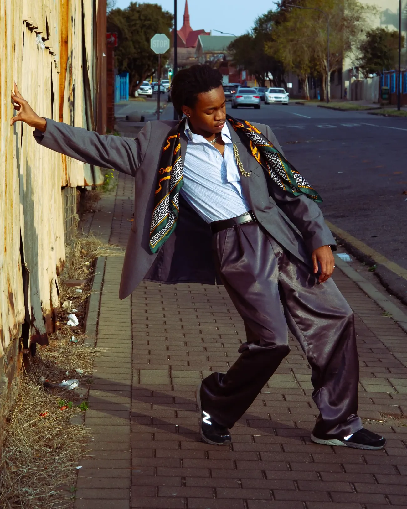
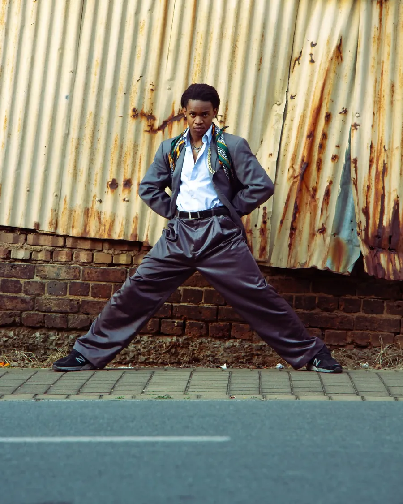
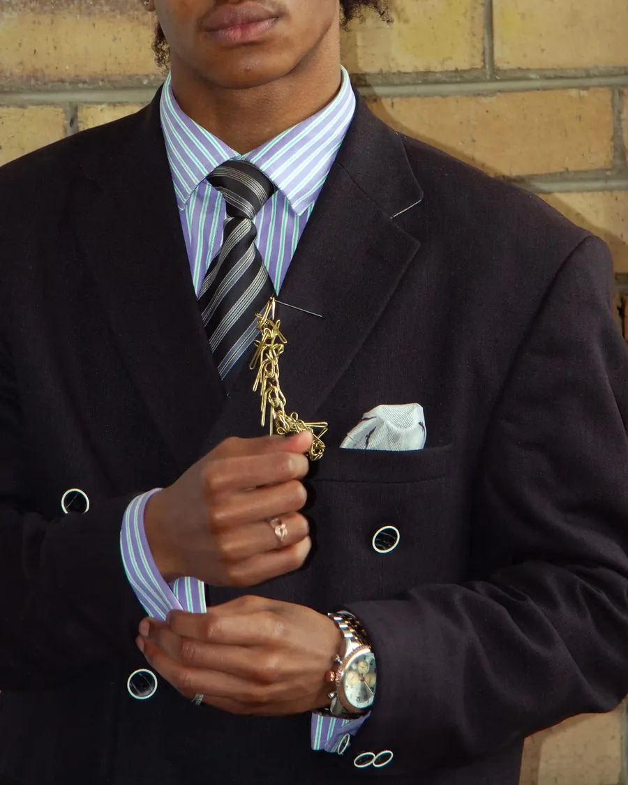

Archive 001 · 30 suits · Newtown · by appointment
Always look like money, even when you have none.
He left home at 4 AM to mix dough in a bakery, dressed like he owned the city. We find the suits men like him wore, restore them by hand and pass them on to the people they inspired.

You control my wage. You do not control my grace.

Sourced from our own streets
Heavy wools, flannels and tweeds from the 60s, 70s and 80s, dug out of bales at Dunusa, Noord Street and Germiston. Cloth built to last, from a time when a suit was an investment. We shoot it where it came from: against rust, brick and kerb.

Finished like a tailoring house
Shoulders rebuilt. Linings replaced in silk. Horn and brass buttons fitted by hand. Pick stitching on the lapel. High quality, not high-end: the Tom Ford standard, reached from the hustle.
Archive 001 · Batch 04
Fresh from the workroom
How a suit is restored
From the bale to your shoulders
Found
Dug out of the bales by hand. We look for weight, cloth and construction, not labels.
Cleaned
Hydrocarbon or wet cleaned, gentle enough for fifty-year-old fibres.
Restored
Rebuilt, relined and refitted by our tailors. Every change is written on its archive card.
Issued
It goes home with an Inheritor, its woven tag and its card. The story continues.

The Inheritors
Tell us his name. Show us his suit.
our fathers, our grandfathers, the men who went before
Share a photograph of the man or woman in your family whose style still sets the standard, and a photograph of yourself today. We publish one family archive every month in the journal.